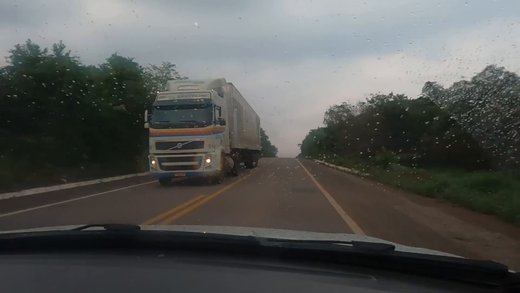

00:01:28.840
Um caminhão vem pela pista oposta em uma reta de asfalto, com gotas no para-brisa e vegetação dos dois lados.
BR-163 entre Santarém e Rurópolis (PA) · confirmado
O apresentador situa a primeira parte do trajeto em direção a Rurópolis, antes de seguir para Itaituba.
Transcrição · 00:01:25 | 00:01:34 | 00:01:38
Turismo Aqui — quadro de vídeo publicado no YouTube